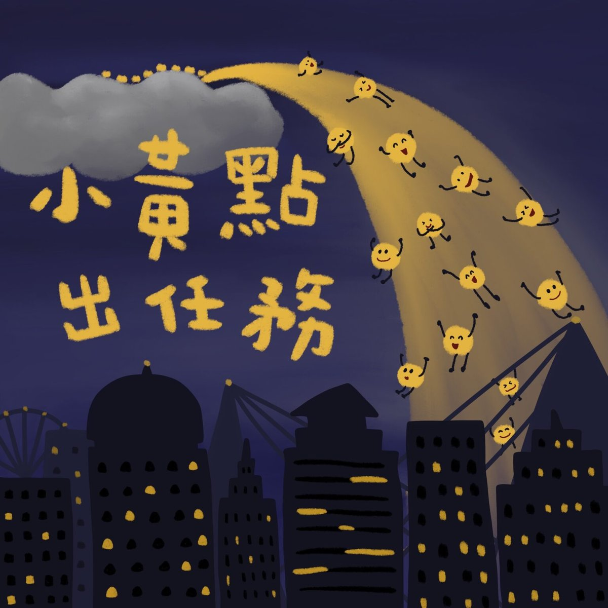

完整版廣播劇，含配音與音效，供角色聲音表情參考。
在很高很遠的天空上，有一個色彩王國，住著數不清的顏色點點。國王每天指派任務：小藍點把大海染藍、小紅點把鍋裡的螃蟹煮成好吃的紅色……世界上的每一個顏色，都是點點們認真工作的成果。
某天晚上，全王國都睡了，只有調皮的小黃點們躲在棉被裡聊天，越聊越興奮，決定偷偷溜下去玩——想變成什麼，就變成什麼！他們變成床單上的尿尿、衣服上的咖哩、滴在書上的芒果汁、噴到牆壁的水彩，把小寶和其他小朋友的家搞得一團亂。孩子們花了一整個下午擦洗，氣得大喊：「我最討厭黃色了！」
被討厭的小黃點們難過地飛回色彩王國，覺得自己不該再下去玩了。國王沒有責罵，只是揮揮手：小黃點跳進稻田，農夫看著金黃的收成笑了；跳上行道樹，整條街的人停下來拍照；最後飛進小寶床頭的小燈裡——原來，用對地方的黃色，是能讓人安心睡著的溫柔顏色。
哈囉，我們來一起說故事囉！今天要說的故事叫做《小黃點出任務》，改編自羱璁的《小黃點出任務》。
在很高很高、很遠很遠的天空上，有一個色彩王國，在那裡，有各式各樣數不清的顏色點點。色彩王國的國王每天都會叫各種顏色的點點去出任務。
國王：今天大海的顏色不夠藍，來吧！小藍點，集合！
小藍點們：嘿咻嘿咻嘿咻，集合～完畢！
國王：小藍點，請把大海染成漂亮的藍色吧！
小藍點們：遵命～～
一百個小藍點跳進海裡面，把海水變成漂亮的藍色。
國王：嗯，不錯不錯。（嗅嗅）這是什麼味道？好香啊！
官員：報告國王，是小寶的媽媽正在煮螃蟹。
國王：哇，真不錯。小紅點，集合！
小紅點們：嘿咻嘿咻嘿咻，集合～完畢！
國王：小紅點，請把鍋子裡的螃蟹變成好吃的紅色吧！
小紅點們：遵命～～
二十個小紅點跳到鍋子裡面，小寶的媽媽掀開鍋蓋，看到螃蟹變成漂亮的紅色。
小寶：哇！我要吃我要吃！肚子餓扁了⋯⋯
就這樣，色彩王國的國王還有各種顏色的點點每天都很忙碌，等到晚上，太陽下山，黑到什麼東西都看不到的時候，國王會說
國王：（呵欠）大家上床休息吧！明天還要工作一整天呢！
眾人：遵命～（呵欠）晚安
所有的顏色點點都睡著了，但是，調皮的小黃點們還醒著，他們蓋著棉被，偷偷聊天。
小黃點A：我今天變成好吃的香蕉喔！
小黃點B：那有什麼了不起的，我今天變成好玩的溜滑梯！
小黃點C：那也還好吧！我今天，變成公主頭上的皇冠喔！
眾小黃點：哇～～
小黃點們嘰嘰喳喳地講個不停，突然，有一個小黃點說
小黃點A：欸，我們現在偷偷跑出去玩，想變成什麼，就變成什麼！
眾小黃點：好啊好啊～耶～
於是，所有的小黃點趁著大家睡著的時候，跳下去玩了。
第二天早上。
小寶＆眾小孩：（爆哭）嗚啊～～～～
爸媽們：怎麼了？哎唷！怎麼尿床了呢？
原來，小黃點變成床單上的尿尿了！小朋友的爸爸媽媽辛辛苦苦地把床單上的小黃點全部都洗掉，小黃點們就快要流進水管裡了，但是他們還不想回家。有一個小黃點學國王講話。
小黃點A：小黃點們，集合～
小黃點們：嘿咻嘿咻嘿咻，集合～完畢！
小黃點A：好，那就⋯⋯出任務吧～～
小黃點B：請問，要去把什麼東西變成黃色呢？
小黃點A：呃⋯⋯這個嘛，大家自己決定！
小黃點們：耶呼～～
所有的小黃點跑來跑去，把各種東西變成黃色。
小黃點A：誒嘿～
（噴濺聲）
小寶：哎唷，媽媽～我的衣服沾到咖哩了！
小黃點B：唷齁～
（咀嚼聲）
小寶：爸爸你看我整個牙齒都是芒果汁！
小黃點C：噫嘻嘻嘻嘻嘻～
（滴落聲）
小寶：哎唷，芒果汁滴到你們的書上面了啦！
爸爸、媽媽：（倒抽一口氣之後壓抑憤怒）小、心、一、點！
小黃點把小寶家弄得亂七八糟，小寶的爸爸媽媽快要生氣了，沒想到，小黃點們還玩不夠。
小黃點們：飛呀～
（噴濺聲）
小寶：（倒抽一口氣）我剛剛打開水彩，不小心噴到牆壁上⋯⋯
爸爸、媽媽：請你自己擦乾淨！
小寶、眾小孩：嗚啊～～～（爆哭）
到處都傳出小朋友的哭聲，原來，不只小寶，其他的小朋友家也被小黃點弄得髒兮兮的，他們花了整下午擦牆壁、擦桌子、擦手、擦臉、擦書、刷牙，忙著把各種黃黃的痕跡擦掉，都沒有時間出去玩了！他們好生氣。
小寶、眾小孩：我最討厭黃色了！哼！
聽到小朋友們這麼說，全部的小黃點都嚇了一跳！
小黃點們：什麼！不要這樣說嘛～～
全部的小黃點突然飛得很高很高、很遠很遠，回到了色彩王國。國王就在那裡等著他們。
國王：小黃點，你們好呀。
眾小黃點：⋯⋯國王你好呀。
國王：你們下去，玩得開心嗎？
小黃點們你看我、我看你，難過地哭了起來。
小黃點A：小朋友們討厭黃色！
小黃點B：大人看到我們也一直嘆氣！
小黃點C：他們花了一個下午一直洗、一直刷，要把我們趕走！
眾小黃點：我們⋯⋯是不是不該再下去玩了？大家都不喜歡黃色
國王說
國王：怎麼會呢？你看～
國王的手一揮，好多小黃點就跳到稻田裡，原本綠油油的稻田，突然變成金黃色的。農夫看著金黃色的稻田，笑著說。
農夫：今年的收成一定很不錯！
國王的手又揮，好多小黃點跳到樹上，讓一整條街的樹葉都變黃了。路上的人們都停下來拍照。
眾路人：好漂亮喔～
最後，國王的手輕輕揮，小黃點們飛到小燈裡面。天黑了，小寶躺在床上。
小寶：爸爸媽媽晚安。
爸爸媽媽：小寶晚安。
爸爸媽媽替小寶開了小燈。
小寶：黃黃的燈光，看起來也不錯嘛⋯⋯（呵欠）
小黃點們在小燈裡，陪著小寶，慢慢地睡著了。
這就是今天的故事《小黃點出任務》，感謝羱璁的提供喔！